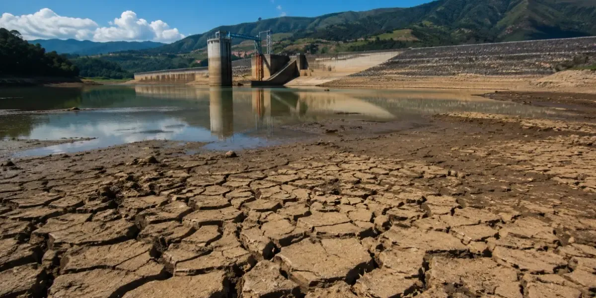
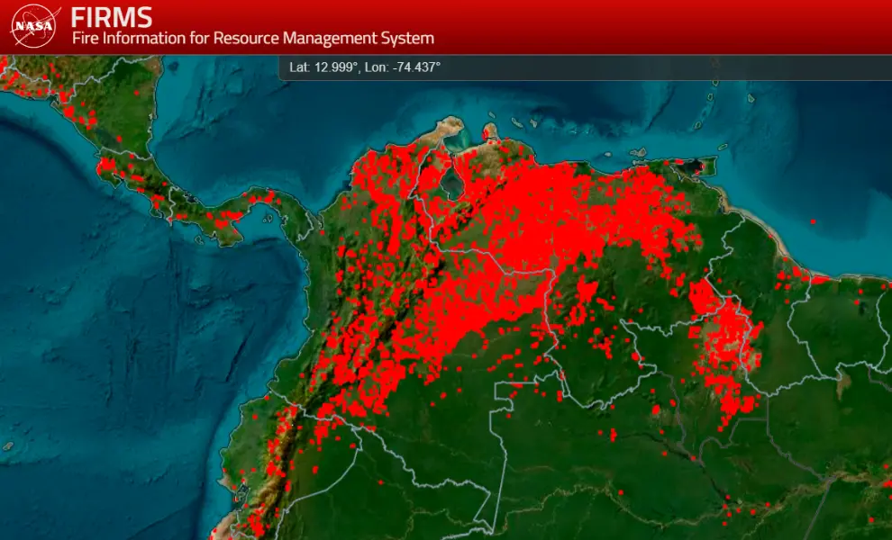

Current Events: The El Niño Phenomenon in Colombia

Introduction
One of the important environmental topics in Colombia today is the El Niño phenomenon. This climate event affects weather conditions around the world and can have important consequences for our country. It is especially important to understand how it influences rainfall, temperatures and water availability.
What Is Happening?
According to an official report published by Colombia's National Unit for Disaster Risk Management (UNGRD) on November 13, 2026, the El Niño phenomenon continues to strengthen. The report explains that this event was officially declared in Colombia on October 8, 2026.
El Niño is a climate phenomenon associated with warmer ocean temperatures in the tropical Pacific. It can change normal weather patterns and influence rainfall in different regions.
How Does It Affect Colombia?
In Colombia, El Niño can cause changes in rainfall and higher temperatures in some regions. These conditions may increase the risk of droughts, forest fires and water shortages.
However, El Niño does not mean that it stops raining everywhere. According to the official report, some regions can still experience heavy rainfall, while others may receive less rain than usual.
Why Is This Important?
This situation is important because water is essential for people, agriculture, animals and natural ecosystems. Changes in rainfall can affect food production, daily activities and the environment.
Understanding this phenomenon helps communities prepare for possible problems and take preventive measures.
What Can We Do?
There are several actions we can take to help protect the environment. We can save water, avoid wasting natural resources, plant trees and prevent forest fires.
Small actions can make a difference when people work together. Taking care of the environment is a responsibility we all share.
My Opinion
In my opinion, environmental issues like El Niño deserve more attention because they affect our daily lives and our future. I believe that people should become more aware of the importance of protecting natural resources.
We cannot control the weather, but we can change our habits and make responsible decisions to reduce our impact on the environment.
